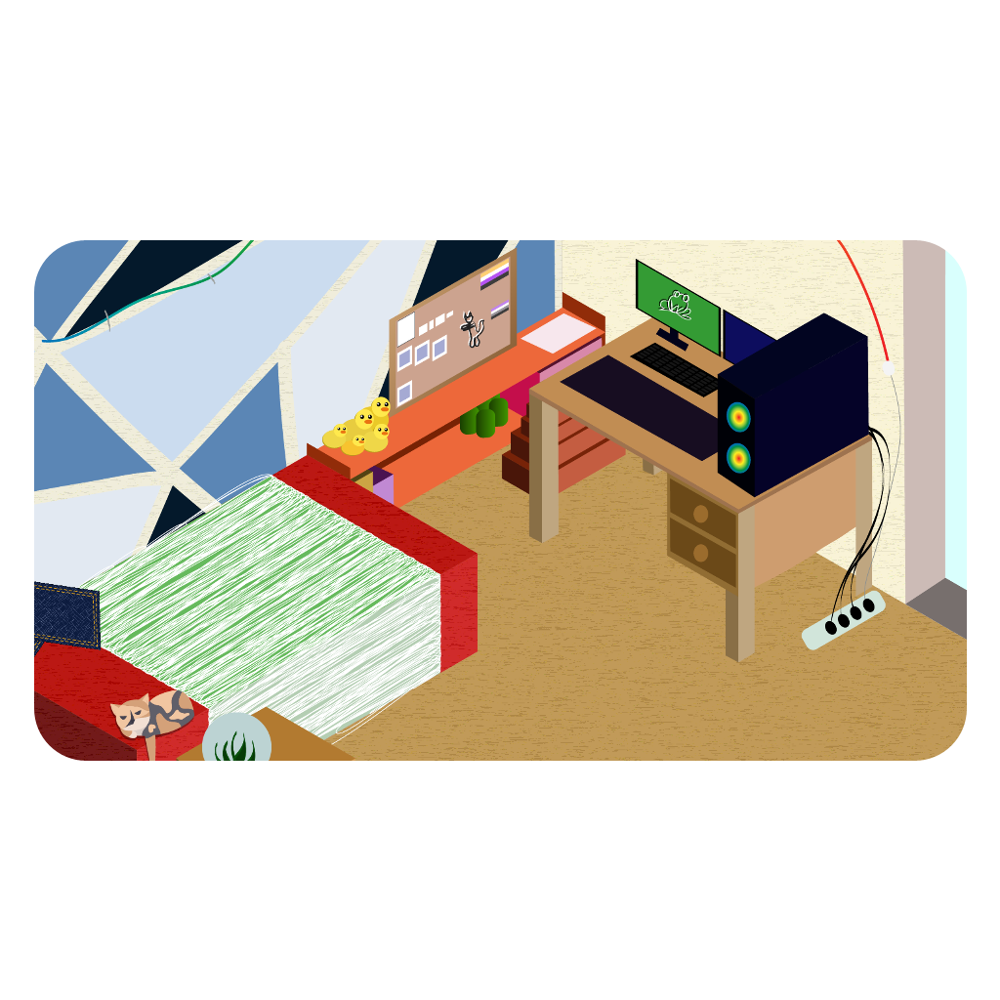
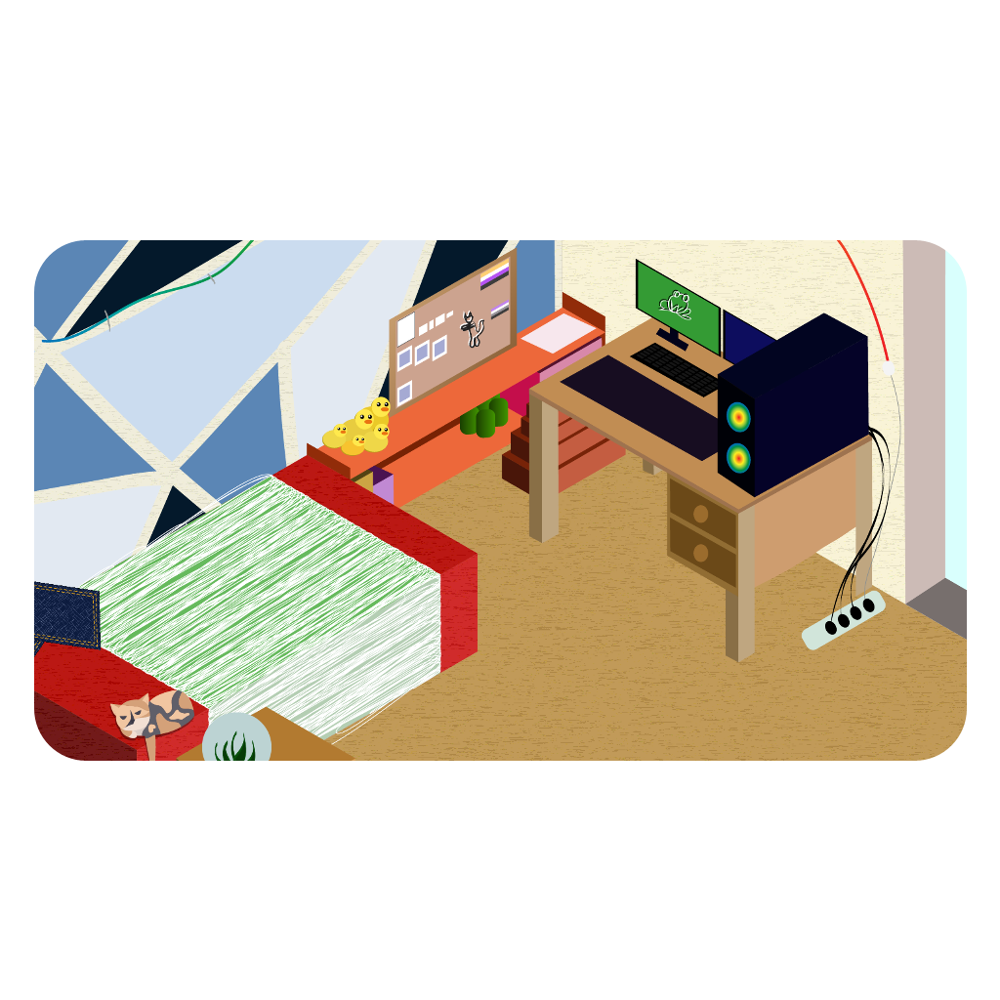
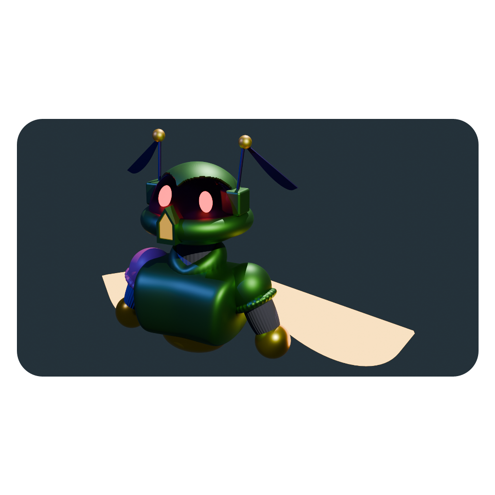
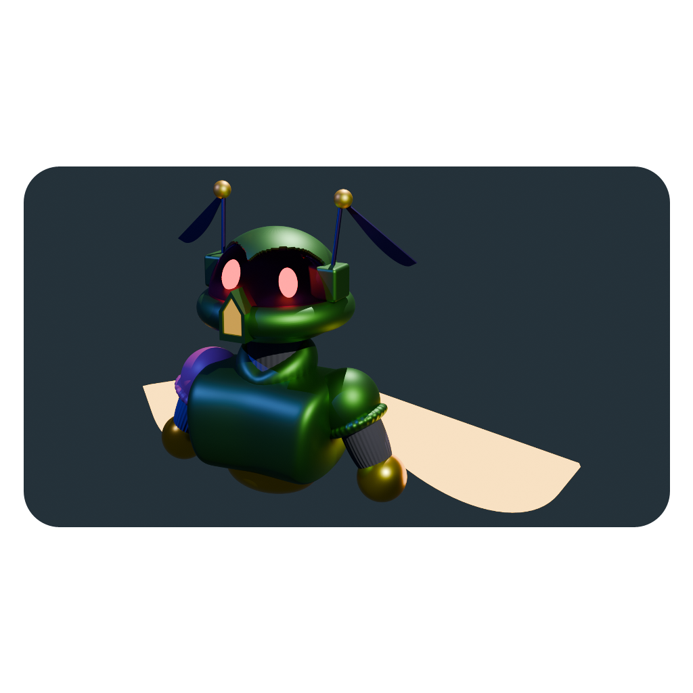
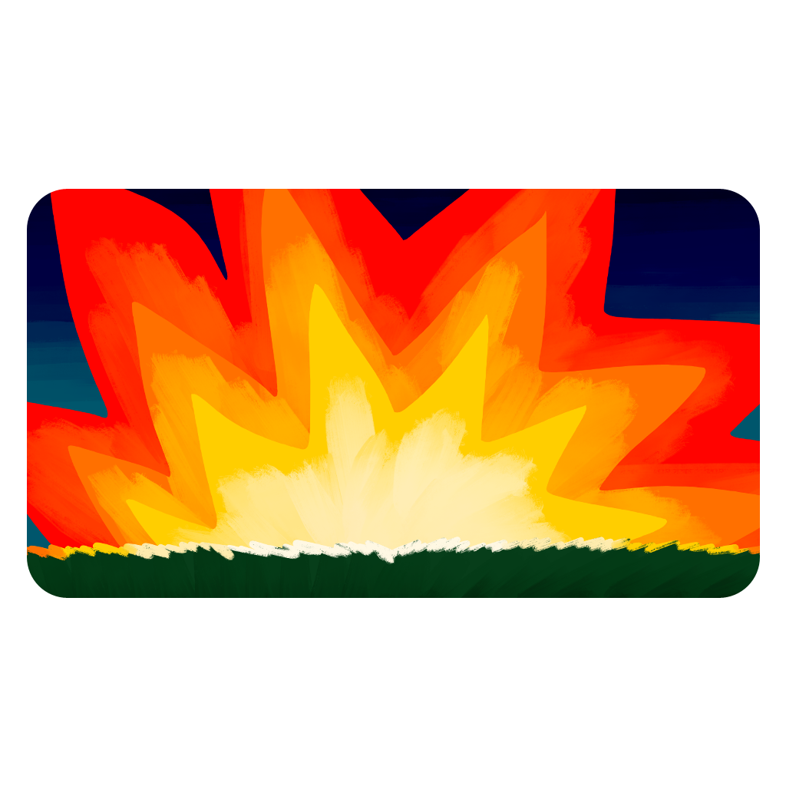
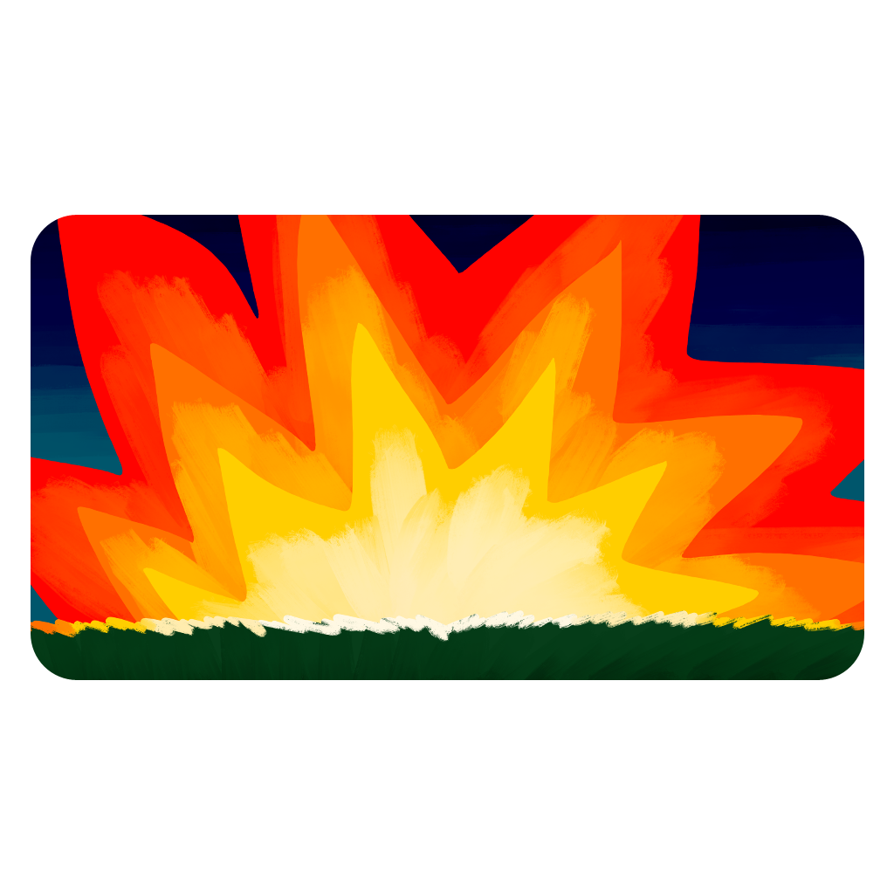
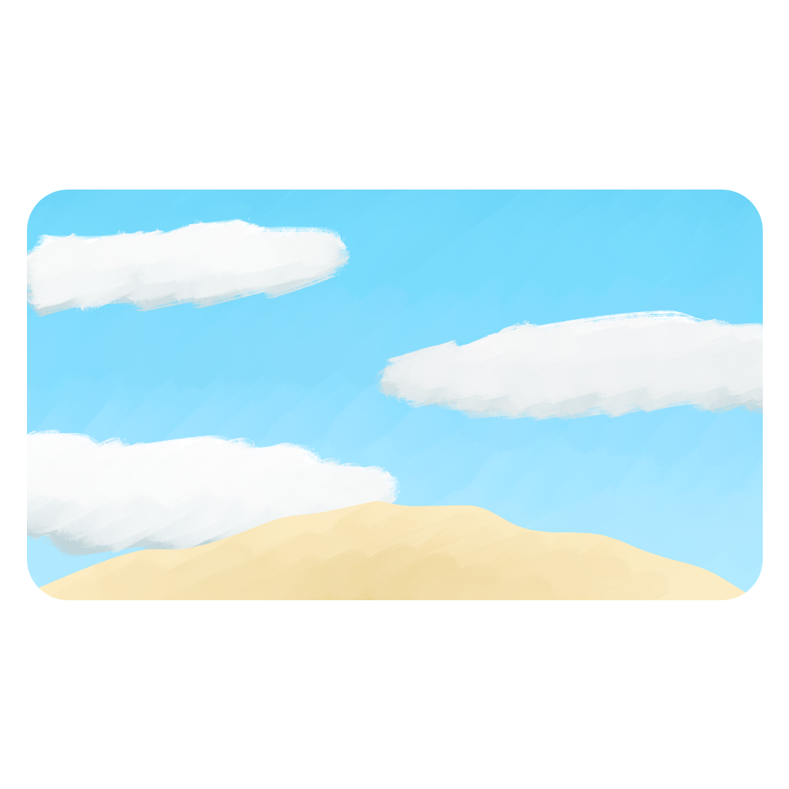
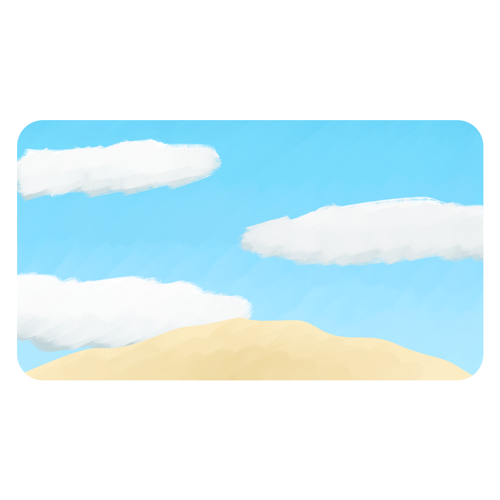

As a student in my first year I was introduced to the primary Adobe pipeline in Illustrator, Photoshop and Animate.
From it I gained various skills surrounding content creation and management that I can transfer between programs and workflows.
I also took on the role of a tutor for this class as a second-year student, practising my skills by helping out the group of students I was responsible for.


 

 



 
